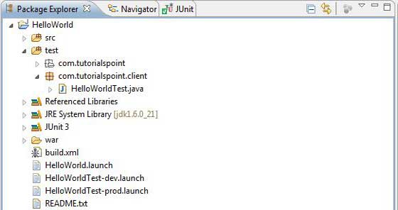
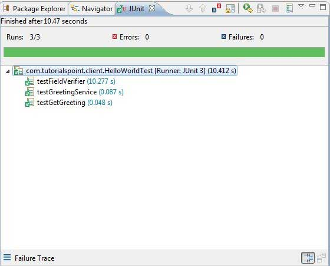

GWT - JUnit Integration
GWT provides execellent support for automated testing of client side code using JUnit testing framework. In this article we'll demonstrate GWT and JUNIT integration.
Download Junit archive
JUnit Official Site: http://www.junit.org
Download Junit-4.10.jar
| OS | Archive name |
|---|---|
| Windows | junit4.10.jar |
| Linux | junit4.10.jar |
| Mac | junit4.10.jar |
Store the downloaded jar file to some location on your computer. We've stored it at C:/ > JUNIT
Locate GWT installation folder
| OS | GWT installation folder |
|---|---|
| Windows | C:\GWT\gwt-2.1.0 |
| Linux | /usr/local/GWT/gwt-2.1.0 |
| Mac | /Library/GWT/gwt-2.1.0 |
GWTTestCase Class
GWT provides GWTTestCase base class which provides JUnit integration. Running a compiled class which extends GWTTestCase under JUnit launches the HtmlUnit browser which serves to emulate your application behavior during test execution.
GWTTestCase is a derived class from JUnit's TestCase and it can be run using JUnit TestRunner.
Using webAppCreator
GWT provides a special command line tool webAppCreator which can generate a starter test case for us, plus ant targets and eclipse launch configs for testing in both development mode and production mode.
Open command prompt and go to C:\ > GWT_WORKSPACE > where you want to create a new project with test support.Run the following command
C:\GWT_WORKSPACE>C:\GWT\gwt-2.1.0\webAppCreator
-out HelloWorld
-junit C:\JUNIT\junit-4.10.jar
com.tutorialspoint.HelloWorld
Noteworthy Points
We are executing webAppCreator command line utility.
HelloWorld is the name of the project to be created
-junit option instructs webAppCreator to add junit suppport to project
com.tutorialspoint.HelloWorld is the name of the module
Verify the output.
Created directory HelloWorld\src Created directory HelloWorld\war Created directory HelloWorld\war\WEB-INF Created directory HelloWorld\war\WEB-INF\lib Created directory HelloWorld\src\com\tutorialspoint Created directory HelloWorld\src\com\tutorialspoint\client Created directory HelloWorld\src\com\tutorialspoint\server Created directory HelloWorld\src\com\tutorialspoint\shared Created directory HelloWorld\test\com\tutorialspoint Created directory HelloWorld\test\com\tutorialspoint\client Created file HelloWorld\src\com\tutorialspoint\HelloWorld.gwt.xml Created file HelloWorld\war\HelloWorld.html Created file HelloWorld\war\HelloWorld.css Created file HelloWorld\war\WEB-INF\web.xml Created file HelloWorld\src\com\tutorialspoint\client\HelloWorld.java Created file HelloWorld\src\com\tutorialspoint\client\GreetingService.java Created file HelloWorld\src\com\tutorialspoint\client\GreetingServiceAsync.java Created file HelloWorld\src\com\tutorialspoint\server\GreetingServiceImpl.java Created file HelloWorld\src\com\tutorialspoint\shared\FieldVerifier.java Created file HelloWorld\build.xml Created file HelloWorld\README.txt Created file HelloWorld\test\com\tutorialspoint\HelloWorldJUnit.gwt.xml Created file HelloWorld\test\com\tutorialspoint\client\HelloWorldTest.java Created file HelloWorld\.project Created file HelloWorld\.classpath Created file HelloWorld\HelloWorld.launch Created file HelloWorld\HelloWorldTest-dev.launch Created file HelloWorld\HelloWorldTest-prod.launch
Understanding the test class: HelloWorldTest.java
package com.tutorialspoint.client;
import com.tutorialspoint.shared.FieldVerifier;
import com.google.gwt.core.client.GWT;
import com.google.gwt.junit.client.GWTTestCase;
import com.google.gwt.user.client.rpc.AsyncCallback;
import com.google.gwt.user.client.rpc.ServiceDefTarget;
/**
* GWT JUnit tests must extend GWTTestCase.
*/
public class HelloWorldTest extends GWTTestCase {
/**
* must refer to a valid module that sources this class.
*/
public String getModuleName() {
return "com.tutorialspoint.HelloWorldJUnit";
}
/**
* tests the FieldVerifier.
*/
public void testFieldVerifier() {
assertFalse(FieldVerifier.isValidName(null));
assertFalse(FieldVerifier.isValidName(""));
assertFalse(FieldVerifier.isValidName("a"));
assertFalse(FieldVerifier.isValidName("ab"));
assertFalse(FieldVerifier.isValidName("abc"));
assertTrue(FieldVerifier.isValidName("abcd"));
}
/**
* this test will send a request to the server using the greetServer
* method in GreetingService and verify the response.
*/
public void testGreetingService() {
/* create the service that we will test. */
GreetingServiceAsync greetingService =
GWT.create(GreetingService.class);
ServiceDefTarget target = (ServiceDefTarget) greetingService;
target.setServiceEntryPoint(GWT.getModuleBaseURL()
+ "helloworld/greet");
/* since RPC calls are asynchronous, we will need to wait
for a response after this test method returns. This line
tells the test runner to wait up to 10 seconds
before timing out. */
delayTestFinish(10000);
/* send a request to the server. */
greetingService.greetServer("GWT User",
new AsyncCallback<String>() {
public void onFailure(Throwable caught) {
/* The request resulted in an unexpected error. */
fail("Request failure: " + caught.getMessage());
}
public void onSuccess(String result) {
/* verify that the response is correct. */
assertTrue(result.startsWith("Hello, GWT User!"));
/* now that we have received a response, we need to
tell the test runner that the test is complete.
You must call finishTest() after an asynchronous test
finishes successfully, or the test will time out.*/
finishTest();
}
});
}
}
Noteworthy Points
| Sr. | Note |
|---|---|
| 1 | HelloWorldTest class was generated in the com.tutorialspoint.client package under the HelloWorld/test directory. |
| 2 | HelloWorldTest class will contain unit test cases for HelloWorld. |
| 3 | HelloWorldTest class extends the GWTTestCase class in the com.google.gwt.junit.client package. |
| 4 | HelloWorldTest class has an abstract method (getModuleName) that must return the name of the GWT module. For HelloWorld, this is com.tutorialspoint.HelloWorldJUnit. |
| 5 | HelloWorldTest class is generated with two sample test cases testFieldVerifier, testSimple. We've added testGreetingService. |
| 6 | These methods use one of the many assert* functions that it inherits from the JUnit Assert class, which is an ancestor of GWTTestCase. |
| 7 | The assertTrue(boolean) function asserts that the boolean argument passed in evaluates to true. If not, the test will fail when run in JUnit. |
GWT - JUnit Integration Complete Example
This example will take you through simple steps to show example of JUnit Integration in GWT. Follow the following steps to update the GWT application we created above
| Step | Description |
|---|---|
| 1 | Import the project with a name HelloWorld in eclipse using import existing project wizard (File > Import > General > Existing Projects into workspace ). |
| 2 | Modify HelloWorld.gwt.xml, HelloWorld.css, HelloWorld.html and HelloWorld.java as explained below. Keep rest of the files unchanged. |
| 3 | Compile and run the application to verify the result of the implemented logic. |
Following will be the project structure in eclipse.
Following is the content of the modified module descriptor src/com.tutorialspoint/HelloWorld.gwt.xml.
<?xml version="1.0" encoding="UTF-8"?> <module rename-to='helloworld'> <!-- Inherit the core Web Toolkit stuff. --> <inherits name='com.google.gwt.user.User'/> <!-- Inherit the default GWT style sheet. --> <inherits name='com.google.gwt.user.theme.clean.Clean'/> <!-- Inherit the UiBinder module. --> <inherits name="com.google.gwt.uibinder.UiBinder"/> <!-- Specify the app entry point class. --> <entry-point class='com.tutorialspoint.client.HelloWorld'/> <!-- Specify the paths for translatable code --> <source path='client'/> <source path='shared'/> </module>
Following is the content of the modified Style Sheet file war/HelloWorld.css.
body{
text-align: center;
font-family: verdana, sans-serif;
}
h1{
font-size: 2em;
font-weight: bold;
color: #777777;
margin: 40px 0px 70px;
text-align: center;
}
Following is the content of the modified HTML host file war/HelloWorld.html.
<html> <head> <title>Hello World</title> <link rel="stylesheet" href="HelloWorld.css"/> <script language="javascript" src="helloworld/helloworld.nocache.js"> </script> </head> <body> <h1>JUnit Integration Demonstration</h1> <div id="gwtContainer"></div> </body> </html>
Replace the contents of HelloWorld.java in src/com.tutorialspoint/client package with the following
package com.tutorialspoint.client;
import com.google.gwt.core.client.EntryPoint;
import com.google.gwt.core.client.GWT;
import com.google.gwt.event.dom.client.ClickEvent;
import com.google.gwt.event.dom.client.ClickHandler;
import com.google.gwt.event.dom.client.KeyCodes;
import com.google.gwt.event.dom.client.KeyUpEvent;
import com.google.gwt.event.dom.client.KeyUpHandler;
import com.google.gwt.user.client.Window;
import com.google.gwt.user.client.rpc.AsyncCallback;
import com.google.gwt.user.client.ui.Button;
import com.google.gwt.user.client.ui.DecoratorPanel;
import com.google.gwt.user.client.ui.HasHorizontalAlignment;
import com.google.gwt.user.client.ui.HorizontalPanel;
import com.google.gwt.user.client.ui.Label;
import com.google.gwt.user.client.ui.RootPanel;
import com.google.gwt.user.client.ui.TextBox;
import com.google.gwt.user.client.ui.VerticalPanel;
public class HelloWorld implements EntryPoint {
public void onModuleLoad() {
/*create UI */
final TextBox txtName = new TextBox();
txtName.setWidth("200");
txtName.addKeyUpHandler(new KeyUpHandler() {
@Override
public void onKeyUp(KeyUpEvent event) {
if(event.getNativeKeyCode() == KeyCodes.KEY_ENTER){
Window.alert(getGreeting(txtName.getValue()));
}
}
});
Label lblName = new Label("Enter your name: ");
Button buttonMessage = new Button("Click Me!");
buttonMessage.addClickHandler(new ClickHandler() {
@Override
public void onClick(ClickEvent event) {
Window.alert(getGreeting(txtName.getValue()));
}});
HorizontalPanel hPanel = new HorizontalPanel();
hPanel.add(lblName);
hPanel.add(txtName);
hPanel.setCellWidth(lblName, "130");
VerticalPanel vPanel = new VerticalPanel();
vPanel.setSpacing(10);
vPanel.add(hPanel);
vPanel.add(buttonMessage);
vPanel.setCellHorizontalAlignment(buttonMessage,
HasHorizontalAlignment.ALIGN_RIGHT);
DecoratorPanel panel = new DecoratorPanel();
panel.add(vPanel);
// Add widgets to the root panel.
RootPanel.get("gwtContainer").add(panel);
}
public String getGreeting(String name){
return "Hello "+name+"!";
}
}
Replace the contents of HelloWorldTest.java in test/com.tutorialspoint/client package with the following
package com.tutorialspoint.client;
import com.tutorialspoint.shared.FieldVerifier;
import com.google.gwt.core.client.GWT;
import com.google.gwt.junit.client.GWTTestCase;
import com.google.gwt.user.client.rpc.AsyncCallback;
import com.google.gwt.user.client.rpc.ServiceDefTarget;
/**
* GWT JUnit tests must extend GWTTestCase.
*/
public class HelloWorldTest extends GWTTestCase {
/**
* must refer to a valid module that sources this class.
*/
public String getModuleName() {
return "com.tutorialspoint.HelloWorldJUnit";
}
/**
* tests the FieldVerifier.
*/
public void testFieldVerifier() {
assertFalse(FieldVerifier.isValidName(null));
assertFalse(FieldVerifier.isValidName(""));
assertFalse(FieldVerifier.isValidName("a"));
assertFalse(FieldVerifier.isValidName("ab"));
assertFalse(FieldVerifier.isValidName("abc"));
assertTrue(FieldVerifier.isValidName("abcd"));
}
/**
* this test will send a request to the server using the greetServer
* method in GreetingService and verify the response.
*/
public void testGreetingService() {
/* create the service that we will test. */
GreetingServiceAsync greetingService =
GWT.create(GreetingService.class);
ServiceDefTarget target = (ServiceDefTarget) greetingService;
target.setServiceEntryPoint(GWT.getModuleBaseURL()
+ "helloworld/greet");
/* since RPC calls are asynchronous, we will need to wait
for a response after this test method returns. This line
tells the test runner to wait up to 10 seconds
before timing out. */
delayTestFinish(10000);
/* send a request to the server. */
greetingService.greetServer("GWT User",
new AsyncCallback<String>() {
public void onFailure(Throwable caught) {
/* The request resulted in an unexpected error. */
fail("Request failure: " + caught.getMessage());
}
public void onSuccess(String result) {
/* verify that the response is correct. */
assertTrue(result.startsWith("Hello, GWT User!"));
/* now that we have received a response, we need to
tell the test runner that the test is complete.
You must call finishTest() after an asynchronous test
finishes successfully, or the test will time out.*/
finishTest();
}
});
/**
* tests the getGreeting method.
*/
public void testGetGreeting() {
HelloWorld helloWorld = new HelloWorld();
String name = "Robert";
String expectedGreeting = "Hello "+name+"!";
assertEquals(expectedGreeting,helloWorld.getGreeting(name));
}
}
}
Run test cases in Eclipse using generated launch configurations.
We'll run unit tests in Eclipse using the launch configurations generated by webAppCreator for both development mode and production mode.
Run the JUnit test in development mode.
From the Eclipse menu bar, select Run > Run Configurations...
Under JUnit section, select HelloWorldTest-dev
To save the changes to the Arguments, press Apply
To run the test, press Run
If everything is fine with your application, this will produce following result:
Run the JUnit test in production mode.
From the Eclipse menu bar, select Run > Run Configurations...
Under JUnit section, select HelloWorldTest-prod
To save the changes to the Arguments, press Apply
To run the test, press Run
If everything is fine with your application, this will produce following result: